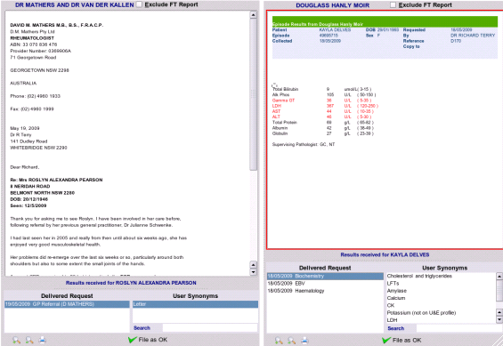

The Result

According to the type of HL7, the result will be displayed in either of the formats shown above:
- Formatted Request for example pathology, with abnormals highlighted in red.
- Incoming Letter for example specialist letter or hospital discharge
After viewing the result the result must be filed, but before using the program and doing this it is essential that you have read the next section on user synonyms, as many results delivered to your inbox will not have the same name as you ordered in the first place.
If you have not read the section on how HL7 is sent to your practice by providers you should read
Delivered Messages before proceeding.